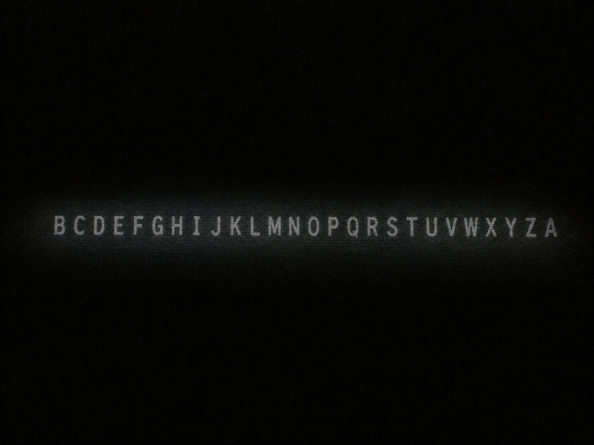

▒▒▒▒▒▒▒▒▒▒▒▒▒▒▒▒▒▒▒▒▒▒▒▒▒▒▒▒▒▒▒▒▒▒
· D E S C E N T · 18 / 40 ·
▒▒▒▒▒▒▒▒▒▒▒▒▒▒▒▒▒▒▒▒▒▒▒▒▒▒▒◆▒▒▒▒▒▒

The dark is not empty.
It is full of things that were loud, once.
The dark always answers a broadcast. It answered.
wind the hour and be still. the dark answers at every hour —
and lies at every hour but the first past midnight.
[ press any key · sound ]
you scrolled into the dark. good. it is quieter here.